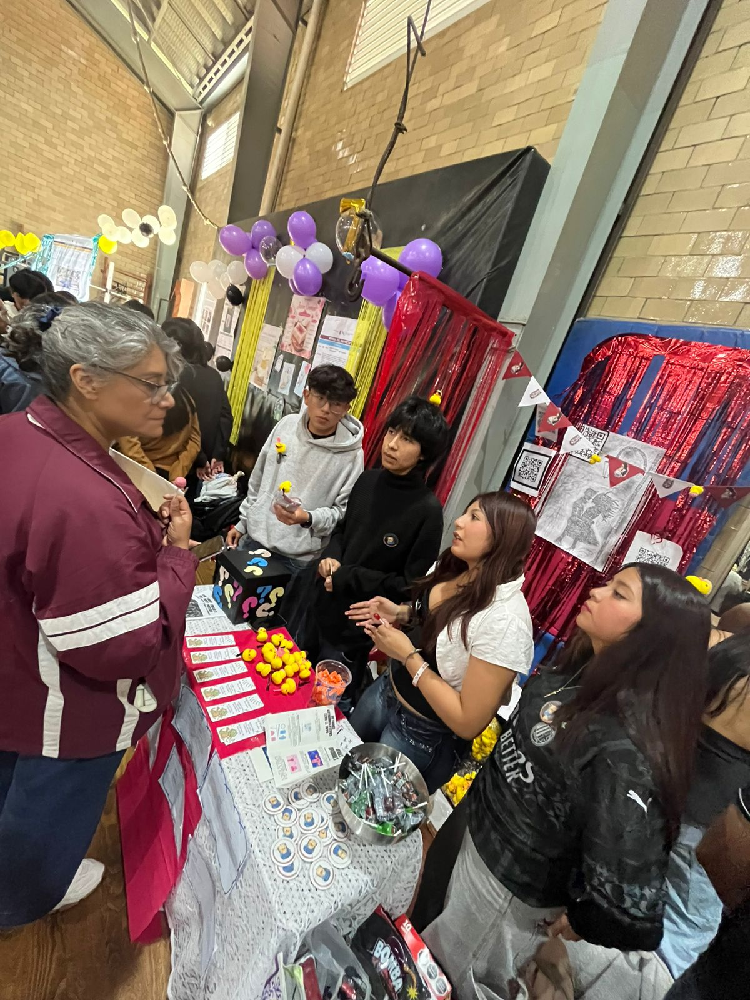

Orientación
El equipo eligió una canción sobre el abuso para desarrollar un cuento ilustrado que narrara una historia relacionada. Durante el proceso, no tuvieron dificultades para trabajar entre ellos y disfrutaron de dar vida a su idea a través de la narrativa.
¿Qué te llevas como experiencia del trabajo de Proyecto Aula?
“La satisfacción de trabajar en equipo y de haber podido transformar una canción en una historia con un mensaje importante sobre el abuso”.